SonyEricsson SK17i
自製遊戲手把(8Bitdo)
雖然司徒相當喜愛SK17i手機的外型，不過由於該手機只有512MB的記憶體，對於現今的Android系統來說，真的是英雄無用武之地，基本上裝不了什麼軟體，就算安裝成功，也很難同時執行多個軟體，因此，己經被司徒冰凍一段時間，不過由於其外型真的相當好看，因此司徒曾多次說服自己使用該手機，不過司徒發現拿Android手機的大部份時間都是在打電動，而SK17i最缺乏的東西就屬遊戲搖桿，因此，司徒一直在思考如何為SK17i打造一個好用的遊戲搖桿，終於在最近入手的一個8Bitdo藍牙搖桿，該搖桿原本是要給N900改機用，不過，測試後發現N900無法成功連到8Bitdo藍牙搖桿，因此剛好可以拿來改造SK17i的遊戲搖桿，而這次的改造算是一個相當成功的案例，因為外型算是相當具有美感，這也讓司徒再度把SK17i拿出來使用，除了當一般手機使用之外，現在的SK17i更是一台相當小巧的Android遊戲機，而對司徒來說，基本夠用的軟體也就那幾個，因此SK17i還是勉強可以使用。
8Bitdo藍牙搖桿
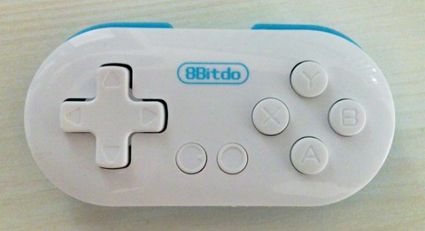
背面是光滑的圓形曲線，基本上增加改機的難度
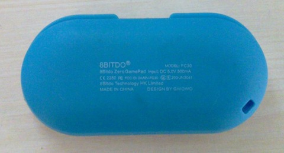
PCB主板正面
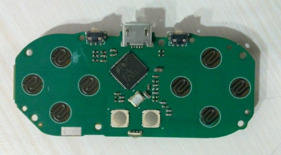
PCB主板背面
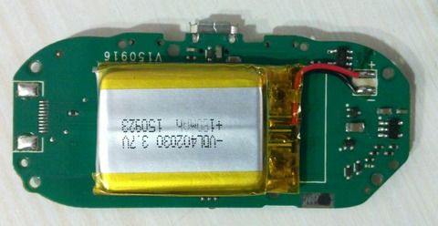
資料相當稀少的BK3231
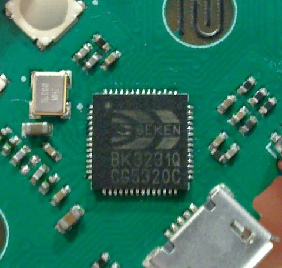
背面一個類似JTAG的焊點
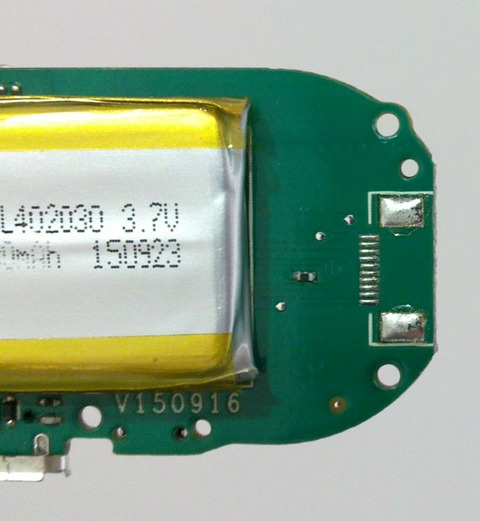
原本的厚度還是太厚，會讓改機後的體積太厚
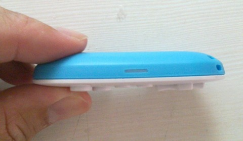
拆掉背蓋的體積
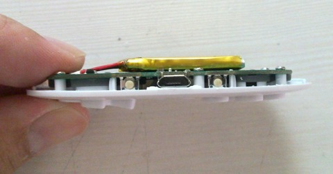
這個應該是最薄的厚度，司徒就是使用這樣的厚度幫SK17i改機，電池的部份就只好找空位塞
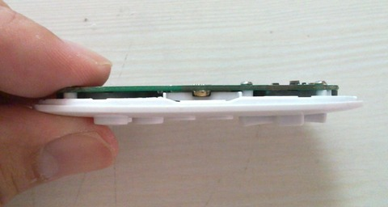
由於L、R的位置太靠上方，而SK17i的鍵盤則是在下方，因此司徒只好使用彈跳開關來代替L、R按鍵
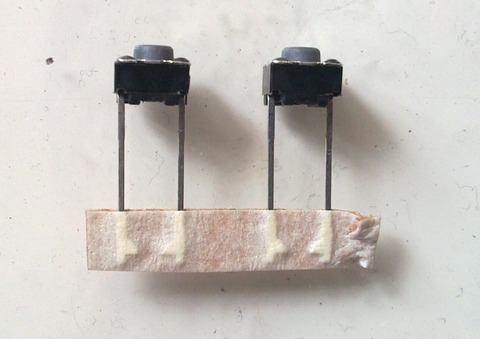
接著把L、R按鍵解焊掉
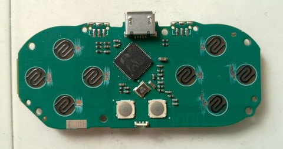
使用三秒膠固定彈跳開關
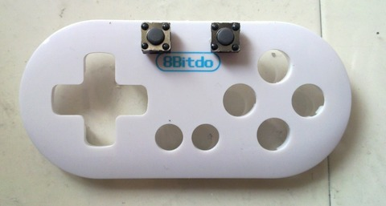
接著使用漆包線連接
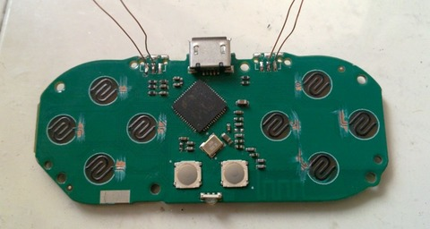
移動後的L、R按鍵位置
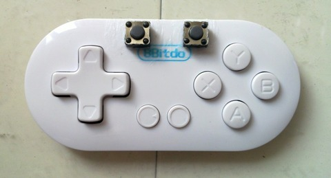
背面的樣子
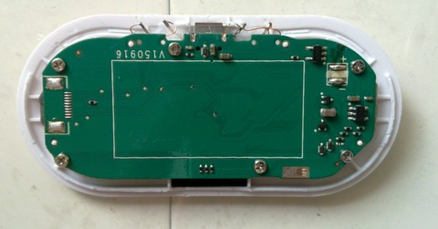
由於司徒不是使用3D印表機列印，因此只好使用容易購買到的檔案夾替代
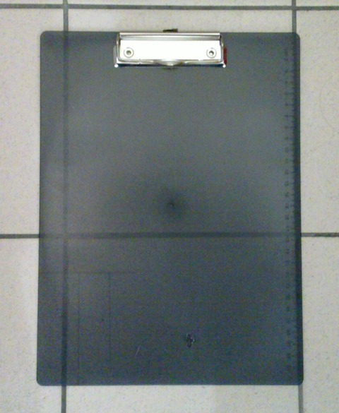
裁剪需要的材料
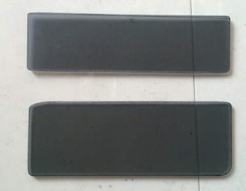
使用三秒膠固定
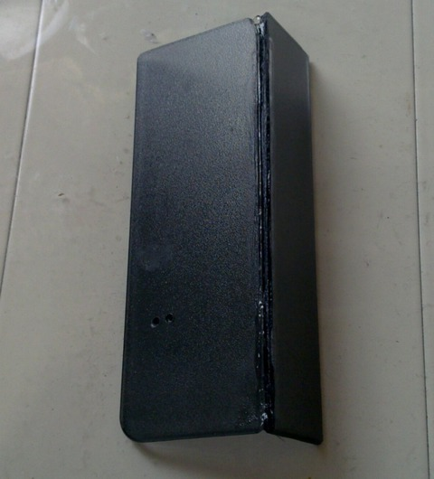
完成後的樣子
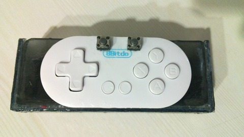
司徒把電池移到背面
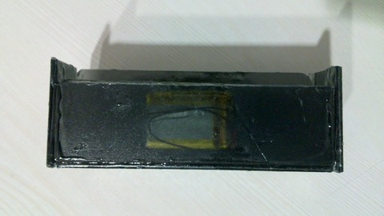
底部
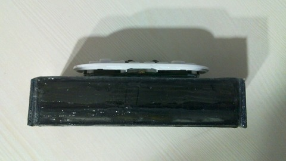
接上SK17i的樣子
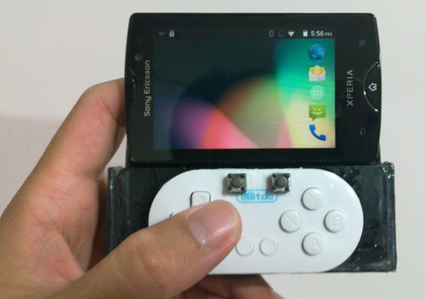
出力位置還算不錯
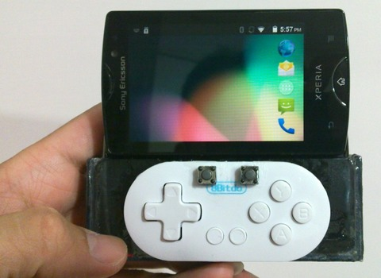
側面位置保留耳機插孔
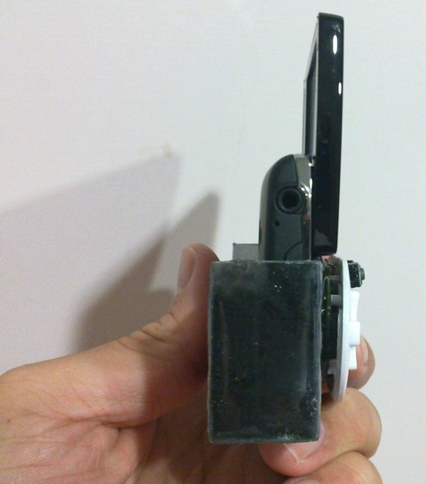
背面則保留喇叭孔
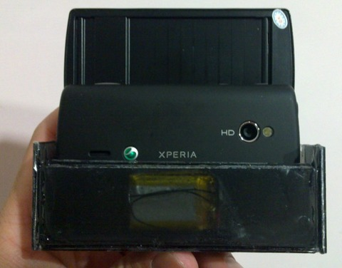
另一面
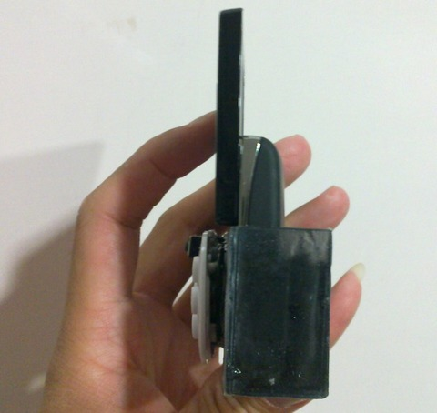
厚度還算是可以接受
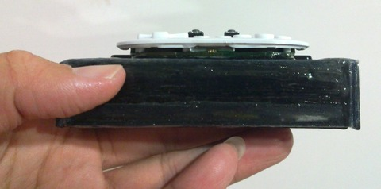
永遠的KOF格鬥遊戲
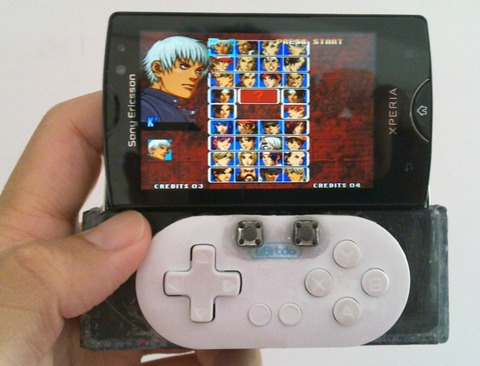